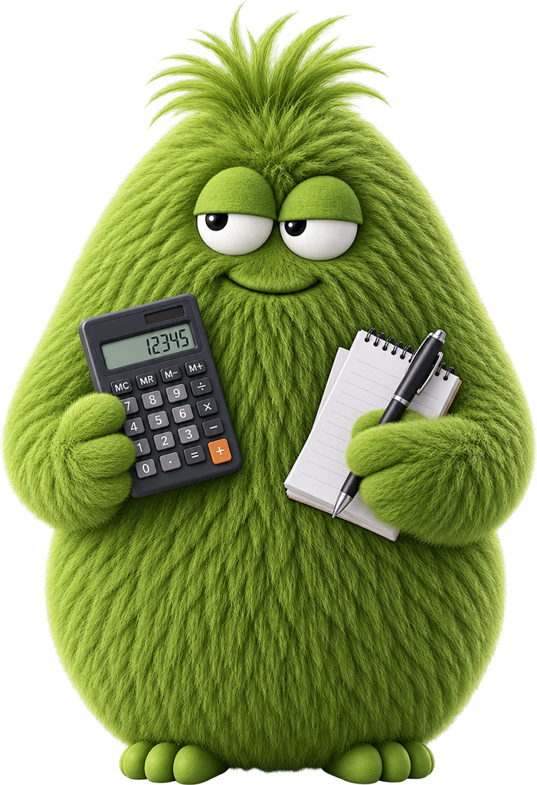
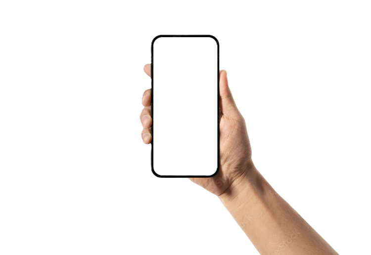

השלמת בהצלחה את התרגול – כל הכבוד!
זמן טוב ללמוד גם בצורה אחרת,
כי למידה מתרחשת בכל מיני צורות.

הוציאו סרגל, עיפרון ודף משבצות –
עכשיו נמדוד, נשווה ונמיר!
משימת כיתה
מצאו חבר או חברה הנמצאים באותו שלב בלמידה. לא מצאתם? תוכלו לבצע את המשימה לבד.
העזרים הדרושים: סרגל, כלי כתיבה ודף משבצות.
נכיר את הסרגל
התבוננו בסרגל שלכם.
הקווים שעל הסרגל נקראים שנתות.
- כל שנתה גדולה מייצגת 1 סנטימטר.
- כל שנתה קטנה מייצגת 1 מילימטר.
ספרו כמה שנתות קטנות יש בין 0 ל-1 ס"מ.
כמה מילימטרים יש בסנטימטר אחד?


רגע, יש פה מלא קווים קטנים...
בואו נספור!
משימת כיתה
מצאו חבר או חברה הנמצאים באותו שלב בלמידה. לא מצאתם? תוכלו לבצע את המשימה לבד.
העזרים הדרושים: סרגל, כלי כתיבה ודף משבצות.
נכיר את הסרגל
התבוננו בסרגל שלכם.
הקווים שעל הסרגל נקראים שנתות.
- כל שנתה גדולה מייצגת 1 סנטימטר.
- כל שנתה קטנה מייצגת 1 מילימטר.
מהו היחס בין מספר הסנטימטרים למספר המילימטרים שמייצגים את אותו האורך?
משימת כיתה
מצאו חבר או חברה הנמצאים באותו שלב בלמידה. לא מצאתם? תוכלו לבצע את המשימה לבד.
העזרים הדרושים: סרגל, כלי כתיבה ודף משבצות.
נכיר את הסרגל
התבוננו בסרגל שלכם.
הקווים שעל הסרגל נקראים שנתות.
- כל שנתה גדולה מייצגת 1 סנטימטר.
- כל שנתה קטנה מייצגת 1 מילימטר.
אם אורך של חפץ מסוים הוא 450 מ"מ, מה יהיה אורכו בסנטימטרים?
משימת כיתה
מצאו חבר או חברה הנמצאים באותו שלב בלמידה. לא מצאתם? תוכלו לבצע את המשימה לבד.
העזרים הדרושים: סרגל, כלי כתיבה ודף משבצות.
התבוננו בסרגל בחלק של האינצ'ים
יתכן שהוא מופיע בצידו השני של הסרגל או כקו מקביל לקו הסנטימטרים (ראו תמונה).
שרטטו במחברתכם קטע באורך 5 אינצ'ים.
מדדו את אורך הקטע בסנטימטרים –
דייקו ככל הניתן.
משימת כיתה
מצאו חבר או חברה הנמצאים באותו שלב בלמידה. לא מצאתם? תוכלו לבצע את המשימה לבד.
העזרים הדרושים: סרגל, כלי כתיבה ודף משבצות.
התבוננו בסרגל בחלק של האינצ'ים
יתכן שהוא מופיע בצידו השני של הסרגל או כקו מקביל לקו הסנטימטרים (ראו תמונה).
השלימו את הפרופורציה הבאה:
משימת כיתה
מצאו חבר או חברה הנמצאים באותו שלב בלמידה. לא מצאתם? תוכלו לבצע את המשימה לבד.
העזרים הדרושים: סרגל, כלי כתיבה ודף משבצות.
איפה נפגוש אינצ׳ים בחיי היומיום?
אחד השימושים הנפוצים באינצ׳ים הוא במדידת גודל של מסכים,
למשל - מסכי טלפון, מחשב וטלוויזיה.
גודל המסך נקבע לפי אורך האלכסון שלו,
ונמדד באינצ׳ים.

מסך 6.1 אינץ'משימת כיתה
מצאו חבר או חברה הנמצאים באותו שלב בלמידה. לא מצאתם? תוכלו לבצע את המשימה לבד.
העזרים הדרושים: סרגל, כלי כתיבה ודף משבצות.
בחרו מכשיר עם מסך שנמצא בסביבה שלכם:
טלפון, טאבלט, מחשב נייד, מסך טלוויזיה.
מדדו בעזרת סרגל את אורך האלכסון של המסך בסנטימטרים.
השלימו:
המירו את האורך לאינצ׳ים בעזרת יחס ההמרה:
1 אינץ׳ = 2.54 ס"מ